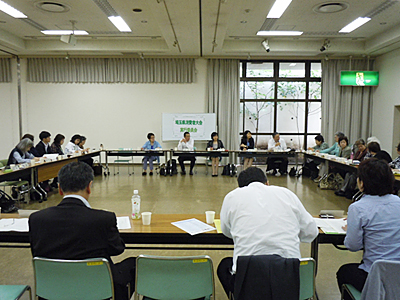

|
|
10月21日に開催される、第50回埼玉県消費者大会に向けた第2回実行委員会が5月27日（火）、与野コミュニティセンターで開かれました。  大会予算（案）、全体会について検討されました 20団体と事務局33人が参加しての第2回実行委員会では、前回実行委員会の報告に続き、今大会の分担金（案）、予算（案）、大会全体会等について事務局より提案説明されました。 また、7月14日（月）に開催予定の第2回プレ学習会の内容やタイトルについて協議し、次回第3回実行委員会以降、学習会への参加を広げることが確認されました。 大会の午後開催される分科会のテーマ、内容についても話し合われました 大きな節目となる大会として、これまで50回の振り返りを作成することを確認しました。 このほか、今年16回目となる「県内市町村消費生活実態調査」（市町村アンケート実施）と秋の市町村消費者行政との懇談のすすめ方、今年度埼玉県消費者大会の県への要請書について話し合われました。 次回第3回実行委員会は、6月12日（木）、浦和コミュニティセンターでおこなわれます。 |